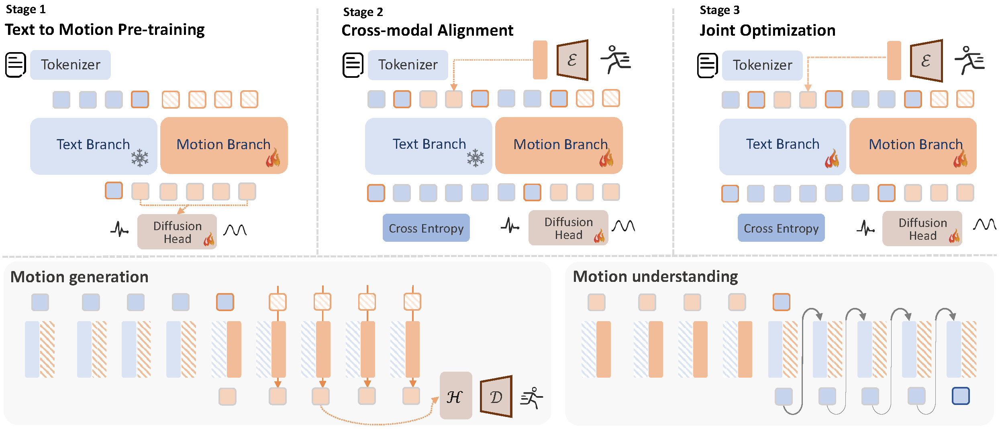

MotionGPT3 is a hybrid motion-language model designed to process arbitrary input sequence of motion or language and generate outputs in either modality.
Text-to-Motion
Motion-to-Text
Abstract
Though recent advances in multimodal models have demonstrated strong capabilities and opportunities in unified understanding and generation, the development of unified motion-language models remains underexplored. To enable such models with high-fidelity human motion, two core challenges must be addressed. The first is the reconstruction gap between the continuous motion modality and discrete representation in an autoregressive manner, and the second is the degradation of language intelligence during unified training.
Inspired by the mixture of experts, we propose MotionGPT3, a bimodal motion-language model that treats human motion as a second modality, decoupling motion modeling via separate model parameters and enabling both effective cross-modal interaction and efficient multimodal scaling training. To preserve language intelligence, the text branch retains the original structure and parameters of the pretrained language model, while a new motion branch is integrated via a shared attention mechanism, enabling bidirectional information flow between two modalities.We first employ a motion Variational Autoencoder (VAE) to encode raw human motion into latent representations. Based on this continuous latent space, the motion branch predicts motion latents directly from intermediate hidden states using a diffusion head, bypassing discrete tokenization. Extensive experiments show that our approach achieves competitive performance on both motion understanding and generation tasks while preserving strong language capabilities, establishing a unified bimodal motion diffusion framework within an autoregressive manner.
Our method
We introduce a three-stage alignment for our hybrid motion-language model. First the model learn to generate motion properly. Then we further align the motion branch with language by introducing motion reasoning. Finally, we fine-tune the model by joint training with unfrozen text modules.
Experiments
Training Speed

Comparison on different model settings of continuous/ discrete representation, and unified model/ bimodal architecture (Ours) on motion generation of validation set. Our hybrid language-motion architecture with continuous motion representation helps accelerate training for about 2x, as well as achieves better quality.
Comparisons
BibTeX
@misc{zhu2025motiongpt3humanmotionsecond,
title={MotionGPT3: Human Motion as a Second Modality},
author={Bingfan Zhu and Biao Jiang and Sunyi Wang and Shixiang Tang and Tao Chen and Linjie Luo and Youyi Zheng and Xin Chen},
year={2025},
eprint={2506.24086},
archivePrefix={arXiv},
primaryClass={cs.CV},
url={https://arxiv.org/abs/2506.24086},
}